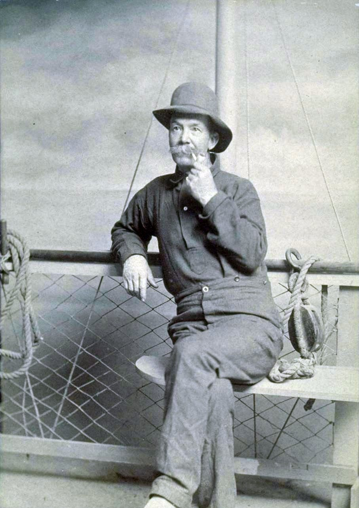

law of attraction / manifestation
引き寄せ（マニフェステーション）
願っているのに、叶わない。何をすれば「引き寄せ」になるのか。悪いことが起きたのは自分の考えのせいなのか。それぞれの悩みに、この考え方を広めた人たちと、心理学者が何と言っているか。

願っているのに、叶わない。思い描いて、感謝して、疑わないようにしているのに、何も変わらない。そして、うまくいかないことが起きると、「自分の考え方が悪かったのだろうか」と思ってしまう。
「引き寄せ」と呼ばれる考え方は、人生のよいことも悪いことも、自分の考えが引き寄せている、というものです。このページでは、その最中によくある悩みをひとつずつ取り上げて、この考え方を広めた人たちと、それを研究した心理学者が、それぞれ何と言っているかを見ていきます。
何をすれば「引き寄せ」になるのか
『ザ・シークレット』が示した3段階
この本が示した手順は、3つです。
1．求める — 何がほしいかを、はっきりさせる
2．信じる — もう受け取ったかのように感じる
3．受け取る — それが来たときの気持ちを、いま味わう
本の言い方では、「思考と感情の組み合わせが、望むものを引き寄せる」。感情がともなわない思考では足りない、とされます。
2020年代に広まった方法
・369メソッド — 望みを、朝に3回、昼に6回、夜に9回、書く
・スクリプティング — 望みが叶ったあとの日記を、いま書く
・ラッキーガール・シンドローム — 「私はとても運がいい」と繰り返す
これらの多くは、20世紀半ばのアメリカの講演者ネヴィル・ゴダードの「叶ったと仮定して生きる」という考え方を、短い形に切り出したものです。
実践者たちが勧めていること
アメリカのメディア Bustle が9人の実践者に取材した記事から、この話題に関わる部分を引きます。肩書きは本人が名乗っているものです。
「引き寄せたいものを、はっきりと、具体的に」。ただし、特定の人や物ではなく、性質を書き出すように。特定のものに絞ると、それ以外の形で来る可能性を閉じてしまうから、と。
ルーペ・ラプエンテ（エネルギー・メンター）
「求めているものと同じ状態に、自分がなること。愛がほしいなら、愛でいること」
スティーナ・ガービス（霊能者）
「行動して、自分を外に出さなければ、何も起きません。それはただ願っているだけです」
3人目のガービスの言葉は、この考え方の内側からのものとしては、少し目立ちます。「願うだけでは足りない」という点で、次に紹介する心理学者の研究と重なるからです。
願っているのに、叶わない
ここで、心理学の側の研究を隣に置きます。否定するためではなく、同じ問いに、別の答え方があることを示すためです。
エッティンゲンは、20年以上にわたって「前向きに思い描くことが、実際に目標を達成する助けになるか」を研究してきました。2014年に、その研究を一般向けにまとめた『Rethinking Positive Thinking（前向き思考を考え直す）』を出しています。
研究の結論は、この考え方の内側で語られていることとは逆でした。
「望む未来を前向きに思い描くと、それを実現するための力が下がる」
理由はこう説明されています。心が「もう達成した」かのように感じると、体も心もくつろいでしまい、実際に動くための緊張が抜ける。思い描くことそのものが、ある種の満足になってしまう、と。
そのうえでエッティンゲンが勧めているのが、メンタル・コントラスティング（心の対比）です。望む未来を思い描いたあとで、それを妨げている、いまの現実の障害も思い描く。この二つを行き来することで、実際に動く力が出る、というものです。手順は4つで、WOOPと呼ばれています。
・Wish（望み）
・Outcome（叶ったときの一番よいこと）
・Obstacle（自分の内側にある障害）
・Plan（障害が出たとき、どうするか）
『ザ・シークレット』が「障害を考えるな、否定的なことを考えると引き寄せる」と言うのに対して、エッティンゲンの研究は「障害を考えないと動けない」と言っています。ここは、正面から食い違っているところです。
ただ、上のガービスの「行動しなければ、ただ願っているだけ」という言葉と、エッティンゲンの「思い描くだけでは力が下がる」は、同じことを指しています。この考え方の内側にも、願うだけでは足りないと言う人はいます。
悪いことが起きたのは、自分の考えのせいなのか
「よいことは自分が引き寄せた」と考えるなら、「悪いことも自分が引き寄せた」ことになります。ここが、この考え方でいちばん人を苦しめる部分です。
アメリカの懐疑的調査委員会（CSI）は、この考え方に「醜い裏面」があると指摘しています。「もし事故に遭ったり、病気になったりしたら、それはあなたのせいだ、ということになる」
科学史家のマイケル・シャーマーは、『ザ・シークレット』が「脳波」や量子物理学の言葉を、本来の意味とは違う形で使っている、と述べています。
また、この考え方を強く信じている人ほど、リスクの高い行動を取りやすく、破産しやすい傾向があった、とする研究も紹介されています。
この考え方を教えている人たちのなかにも、ここを気にしている人はいます。ツインレイのページで引いたクリスティーナ・ロペスは、「必ず結ばれる」と教えることについて、「そう聞くと、その人に執着する理由ができてしまう」と述べていました。「引き寄せられるはずだ」という思いが、かえって人を縛ることがある、という指摘です。
病気や事故、災害、失業。それらが「あなたの考えのせい」だと言う人がいたら、その人は、この考え方を広めた側からも、批判している側からも、支持されていない言い方をしています。
日本では、どう広まったか
日本での「引き寄せ」は、『ザ・シークレット』（2007年）より前に、別の入り口を持っています。
アメリカのダリル・アンカが「バシャール」という存在の言葉として語る内容は、1987年に日本に紹介され、大きな反響を呼びました。同年12月、VOICE出版から『BASHAR 宇宙存在バシャールからのメッセージ』が出ています。
そこで中心に置かれたのが、「ワクワクすることをする」という言い方でした。2002年には『ワクワクが人生の道標となる』『人生の目的は「ワクワク」することにある』（関野直行訳、VOICE新書）といった題名の本も出ています。
「ワクワク」は、いまでは日本語のこの分野でごく普通に使われる言葉ですが、その広まり方には、この1987年からの流れが関わっています。
つまり日本語圏では、「望みを思い描く」（ザ・シークレット）より前に、「いちばん心が動くことをする」（バシャール）という形で、この考え方が入っていました。行動の側に重心がある分、上のエッティンゲンの研究とは、それほど食い違いません。
どこから来たのか
・1855年 — アンドリュー・ジャクソン・デイヴィスの著作に「law of attraction」という言葉が現れる（歴史家ミッチ・ホロウィッツによる）
・1886〜87年 — プレンティス・マルフォードが「思いは物である」という考えを体系的に説く。ニューソートと呼ばれる運動の中心人物のひとり
・1906年 — ウィリアム・ウォーカー・アトキンソン『思考の振動、あるいは思考世界における引き寄せの法則』。「似たものは似たものを引き寄せる」
・1910年 — ウォレス・ワトルズ『富を引き寄せる科学的法則』
・1937年 — ナポレオン・ヒル『思考は現実化する』。ベストセラーに
・2006年 — ロンダ・バーン『ザ・シークレット』。映画と本
・2020年代 — TikTok で「マニフェステーション」として再び広まる
この流れの根にあるのは、19世紀アメリカのニューソートという運動です。「病は心にある」と説いたフィニアス・クインビーから始まり、宗教と自己啓発のあいだで育ちました。『ザ・シークレット』は、その100年分の言い方を、映像の形でまとめ直したものです。
近いことを言っているもの
- メンタル・コントラスティング（WOOP） — 上に書いたエッティンゲンの方法。「思い描く」ことを否定せず、そこに「障害」を足したもの
- 予言の自己成就 — 社会学者ロバート・マートンの言葉。「こうなる」と信じて行動すると、その行動によって実際にそうなる、という現象。引き寄せと似ていますが、行動を経由する点が違います
- 確証バイアス — 引き寄せがうまくいった例は覚えていて、いかなかった例は忘れる、という心の働き。エンジェルナンバーのページにも書きました
- ワクワク — 日本語圏で育った言い方。上に書いたとおりです
ひとつだけ、お願いしたいこと
「思い描けば治る」「思い描けば入ってくる」と語る人はいますが、この考え方を広めた側の実践者も「行動しなければただ願っているだけ」と言い、研究者は「思い描くだけでは力が下がる」と言い、批判者は「病気や事故を本人のせいにする裏面がある」と言っています。
体の不調は医療機関へ。お金のことは、いつもどおりの手順で。思い描くことは、そのあとでも、その横でも、できます。
出典・参考
- Law of attraction (New Thought)（英語版ウィキペディア）19世紀からの来歴と、批判
- Manifestation (popular psychology)（英語版ウィキペディア）2020年代のSNSでの広まり、369メソッドなど
- ロンダ・バーン『ザ・シークレット』山川紘矢・山川亜希子・佐野美代子訳、角川書店、2007年日本語版
- Gabriele Oettingen, Rethinking Positive Thinking: Inside the New Science of Motivation（Current, 2014）20年の研究をまとめた本。ニューヨーク大学の研究室の出版一覧
- How To Manifest Your Ideal Partner, According To Experts（Bustle, 2018年・2021年更新）実践者9人の名前つきの発言
- ダリル・アンカ（日本語版ウィキペディア）1987年の初来日、「ワクワク」
関連することば
 inner childインナーチャイルド恋愛になると、急に子どもに戻ってしまう。人が離れていくのが怖い。安心できたことがない。自分のなかの「子ども」が傷ついているのか、どう確かめ、どう向き合えばよいと言われているか。angel numbersエンジェルナンバー時計を見ると11:11。車のナンバーが444。同じ数字ばかり目に入る。これは何かの合図なのか。何をすればいいのか。そして、この考え方を作った本人が、後年それを離れたという事実について。
inner childインナーチャイルド恋愛になると、急に子どもに戻ってしまう。人が離れていくのが怖い。安心できたことがない。自分のなかの「子ども」が傷ついているのか、どう確かめ、どう向き合えばよいと言われているか。angel numbersエンジェルナンバー時計を見ると11:11。車のナンバーが444。同じ数字ばかり目に入る。これは何かの合図なのか。何をすればいいのか。そして、この考え方を作った本人が、後年それを離れたという事実について。 empathエンパス人混みで消耗する。相手の不機嫌が自分に移る。断れない。ひとりでいたい。自分は弱いのだろうか。それぞれの悩みに、この分野で名前の知られた人たちが何と言っているか。
empathエンパス人混みで消耗する。相手の不機嫌が自分に移る。断れない。ひとりでいたい。自分は弱いのだろうか。それぞれの悩みに、この分野で名前の知られた人たちが何と言っているか。 spiritual awakening覚醒自分がおかしくなったのではないか。まわりの人が分からなくなった。体がつらい。昔のことばかり思い出す。家族に理解されない。それぞれの悩みに、この分野で名前の知られた人たちが何と言っているか。
spiritual awakening覚醒自分がおかしくなったのではないか。まわりの人が分からなくなった。体がつらい。昔のことばかり思い出す。家族に理解されない。それぞれの悩みに、この分野で名前の知られた人たちが何と言っているか。 shadow work影（シャドウワーク）人の嫌なところが気になって仕方ない。同じ失敗を繰り返す。急に怒りが噴き出す。自分を責めてしまう。そうした「自分の見たくない部分」とどう向き合えばよいと言われているか。Saturn returnサターンリターン27歳から30歳ごろ、なぜか人生が急に重くなる。仕事も、関係も、住む場所も、いっぺんに問われる気がする。占星術がこの時期に与えている名前と、心理学が同じ時期に与えている名前。
shadow work影（シャドウワーク）人の嫌なところが気になって仕方ない。同じ失敗を繰り返す。急に怒りが噴き出す。自分を責めてしまう。そうした「自分の見たくない部分」とどう向き合えばよいと言われているか。Saturn returnサターンリターン27歳から30歳ごろ、なぜか人生が急に重くなる。仕事も、関係も、住む場所も、いっぺんに問われる気がする。占星術がこの時期に与えている名前と、心理学が同じ時期に与えている名前。